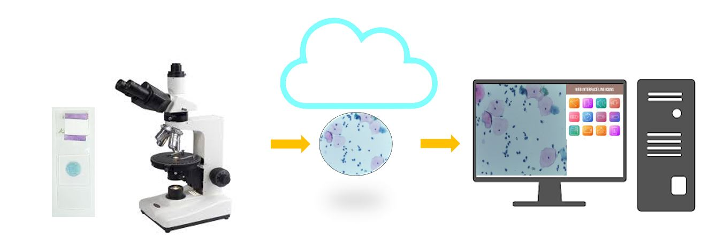

• Cervical cancer is a type of cancer that occurs in the cells of the cervix — the lower part of the uterus.
• Long-lasting infection with certain types of human papillomavirus (HPV) is the main cause of cervical cancer in majority of cases.
• Cervical cancer is curable if detected at an early stage.
Pap Smear
During a Pap test, your doctor scrapes and brushes cells from your cervix, which are then examined in a lab for abnormalities.
A Pap test can detect abnormal cells in the cervix, including cancer cells and cells that show changes that increase the risk of cervical cancer.
LBC
• The sample collection and technique for the preparation of the slides differ slightly for both the methods.
• Conventional Pap test involves taking the sample from the vagina with the help of a brush or spatula and then preparing and staining the smear on a glass slide with hematoxylin and eosin.
• In the LBC method, the slides are prepared by a kit. It involves more steps such keeping the samples in a container having some additive fluids to break the debris. Finally, staining using hematoxylin and eosin after which a uniform slide is obtained.
About The Software

LBC Pap Scanner, is built in advanced artificial intelligence technology to detect cervical cancer. LBC Pap Scanner analyses pap smear samples to call out Normal or Abnormal as well as Normal or Abnormal sub-classes within a short span of time.